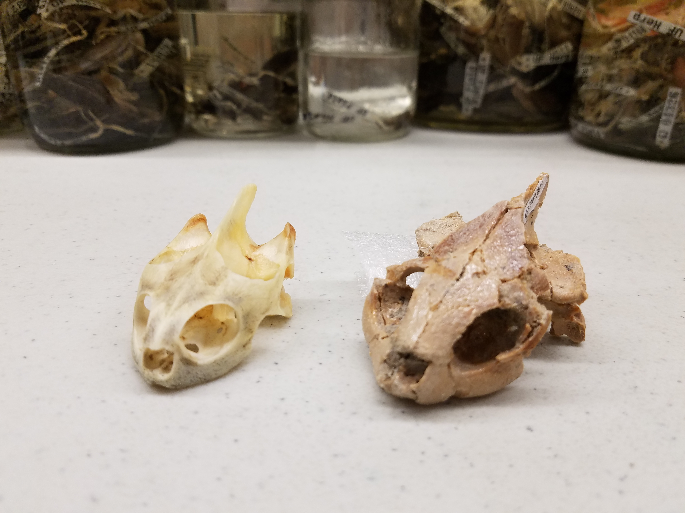
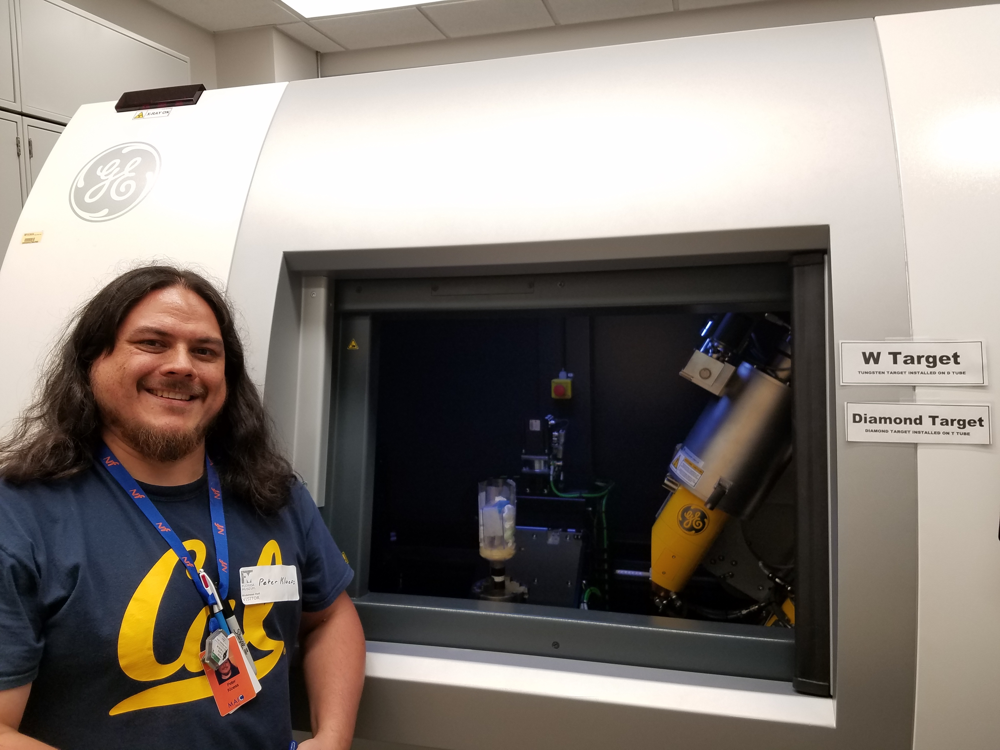

Peter Kloess
By Olivia Jerram | September 18, 2020

UC Berkeley graduate student Peter Kloess stands at the Flaming Cliffs in Mongolia — a famous dinosaur fossil locality. Courtesy: Peter Kloess.
Name:
Peter Kloess
Age:
38
Hometown:
San Francisco, California
Department:
Integrative biology at UC Berkeley
Research topic:
Quantifying morphological differences in turtle beaks in order to understand their diet and habitat and to differentiate similar turtle genera.
Peter Kloess knew he wanted to be a paleontologist ever since he was a kid. He didn’t exactly know the word for it back then, but he knew 100% that he absolutely loved dinosaurs.
Now, a lot of kids love things that don’t end up sticking when they become adults, but Peter’s obsession with dinosaurs stuck around through college. Arriving at Montana State University, he spent the next four years studying geology and paleontology through the lens of his childhood dream.
“Up there, it's dinosaur country, so I definitely got my taste of dinosaurs,” he says.
And by “taste of dinosaurs” Peter means all the summers when he camped for three months at a time out in the Badlands, hiking around with the rest of his crew looking for any fossils starting to poke out of the ground, and then, when they found one, settling into the slow, painstaking work of unearthing them bit by bit with trowels or hand shovels. Rarely, Peter says, they’d break out the jackhammers. But that meant going back to their campsite and hauling over the generator so they’d have power, and then trying not to damage anything in the process.
“It's the worst feeling — one of the worst feelings in the world — when you've been spending all this time getting this fossil looking pretty and trying to get out of the ground and then it just crumbles on you,” Peter says. “It's pretty awful.”
But that doesn’t happen too often. Mostly, the digs were a lot of fun for Peter and the “motley” group he went along with — his words, not mine.
It wasn’t until he was nearing his graduation that he started thinking about what he wanted to do with his degree — and that’s where he said goodbye to dinosaurs.
“A lot of my friends in paleontology ... like to talk about [studying dinosaurs] as the ‘gateway science’ — as in a ‘gateway drug,’ you know?” Peter says, laughing at his own joke. “Paleontology, and dinosaurs specifically, are a good way to get into science.”
For Peter, that gateway led to environmental consulting, which he did for the next seven years. Environmental consultants like him survey construction sites and read up on the fossil history of the area before any construction begins. And then, once the construction equipment arrives, they stand nearby and watch the ground being dug up, halting work whenever they see a fossil starting to emerge so they can run down and pull it out.
“What I tell people is that it's basically saving fossils from bulldozers,” Peter says, shrugging nonchalantly.
I picture Peter next to a bulldozer — his long, wavy hair springing from under a hardhat.
“But I just found that I had so many more questions than what the job was prepared to answer for me,” Peter continues, breaking into my reverie. “Like the bigger questions of: Why is this fossil here? Were these animals common in whatever area I was working in? … All these questions that I'd be asking my colleagues because I was just so jazzed and interested.”
His coworkers would tell him: I don’t know; it’s above my pay grade; we don’t have time to look into that kind of stuff. So Peter started thinking about a place where he could go to get some better answers — and that’s how he ended up going back to school.
“So, I took a gap decade after my bachelor's, before my master's,” Peter summarizes. “It was literally 10 years.”
After a quick stint at Cal State Fullerton studying the differences over time in bird communities along the California coast, Peter had his MS in geological sciences and was ready to move on to a PhD program at UC Berkeley where he now studies — of all things — turtles.
But Peter reminds me that there is a sort of relationship between all the things he’s studied: Birds, the only living descendents of dinosaurs, have beaks, and so do turtles.
“There are some thoughts of looking at turtle beaks and bird beaks and maybe [finding] some information that we can tease out of those two taxa, and apply to dinosaurs,” Peter says. “Because outside of birds, we don't have living dinosaurs anymore, so we have to make some interpolations from modern organisms.”
Aside from that, small differences in beak shape and size can tell us a lot about what an animal is eating and where they’re living — remember Darwin and his finches? It can also help us understand the boundaries between different genera that contain very similar-looking species. Three such genera in the turtle world are Pseudemys (think fresh-water river cooters), Trachemys (like red-eared sliders) and Chrysemys (the painted turtle).
All these turtles have very similar morphologies, or physical anatomies. So scientists who work on categorizing these turtles into the right genera started relying on gene-based studies to identify some of their distinctions. By now, these scientists, called taxonomists, have come up with pretty solid splits between the genera, Peter tells me.
“But as this paleontologist at heart, I'm always one to want to work with a specimen in hand. So that's where morphology is really important to me,” Peter says. “Even though we have all these genetic-based studies pointing us in the direction of these splits, I always want to go back to the skulls and see: Can we figure out how [the genera] split out just based off of the shape?”
And that’s precisely what Peter is doing. Before the pandemic, he traveled to museums across the country — his happy places, he tells me — to borrow collections of turtle skulls and take them back to the CT scanning facility on campus. Running the skulls through the scanner, just like the ones in hospitals, gives Peter lots of linear data on the shape of the skull. Then he spends a lot of time processing all that data. In fact, Peter tells me, he uses a gaming laptop, not because he’s a gamer (at least, not that kind of gamer), but because it has the right graphics card and amount of RAM that’s needed to crunch the complex 3D datasets.
“Long story short, I ran all these specimens specific to those three [genera] through the statistics programs, and I am seeing some separation. And with that knowledge, I think I can split out what regions of the skulls are different. They are fairly subtle differences, but I am seeing some differences there,” Peter says. “That's kind of where [my] dissertation is at the moment.”
Peter reminds me that it’s still relatively early in the analysis process but he does think the results are promising. The best part of getting these results, though? Telling the undergraduate students who’ve been helping him with his research for nearly a full year.
According to Peter, there was a lot of build up to this moment — training everyone to use the CT scanner and the data processing programs, among other things — and then the pandemic hits and they all scatter to other parts of the Bay Area, Southern California, and Hong Kong. They continued to work remotely, though, and by the end of the spring semester, they had enough data to compare those three genera mentioned earlier. So while the undergrads were busy with their virtual final exams, Peter ran some final analyses.
“The Thursday [or] Friday of finals week, we got some results, and I was just so excited that I immediately sent off an email to my team, and it was just like, ‘Hey, can you guys all meet on Monday because we have results,’ ” Peter says. “That was one of those exciting moments … having a product to show everybody — like this is what the hard work has been building to."
I ask Peter a little more about teaching and mentorship, because I can sense how important it is to him, and he tells me this:
“You know, I went into my master’s … [and] I really didn’t have any expectations of wanting to teach. I was like, ‘I’m just going to do it because it pays the bills,’ ” Peter says. “But I ended up loving it.”
And now that’s what Peter says he wants to do when he finishes his PhD: keep teaching. He echoes what I’ve heard a lot of graduate students say before: that it’s what makes staying in academia worth it.
Peter calls academia “a mixed bag” — another thing that graduate students often say. He acknowledges that that doesn’t really mean anything, though, and then pauses while he finds the right words to explain it better, eventually making a list of pros and cons for me.
Some pros: Peter loves teaching, he loves the “eureka moments” where you figure something out for the first time or dig up a dinosaur skeleton that hasn’t been seen by anyone in millions of years, and he loves the connections he’s made with other students and with faculty, like his advisor, Professor Leslea Hlusko.
He makes sure to tell me all these pros first — the good stuff — because, at the end of the day, Peter likes being a graduate student. But eventually we get to the less good stuff: For one thing, turtles weren’t part of Peter’s first dissertation proposal — he had to choose something to study that wouldn’t exceed the length of his PhD. For another thing, there isn’t a lot of Filipino representation in vertebrate paleontology, which can feel sort of isolating.
Peter grew up in San Francisco, and he says that having a mixed heritage wasn’t really a big deal to him until he joined his master’s program. There, as it turned out, the other master’s student in his lab was also Filipino. They hung out a lot and went to conferences together. At one conference, they didn’t see anybody else who looked like them.
“I think we turned to each other and were like, ‘Wow, are we the only ones? Are we the only Filipinos here?’ ” Peter says. “And it turned out, no, there are other folks out there, just not that many.”
Peter opens up to me that it even took him a while to start exploring his own cultural background.
“On both sides of my family, the immigration to the United States happened right around World War II, and I think it’s fair to say that a lot of immigrants at that point in time were encouraged to assimilate. And so that had a trickle-down effect to me,” Peter says.
And this is another reason why he loves teaching, he tells me, bringing things back full-circle like any good teacher. As he talks, I gather that, for Peter, mentoring people with diverse backgrounds and experiences maybe even helps him understand how his own background fits into his work a little bit better.
“You know, we do have different points of view and we do have different things to bring to the table,” he says. “I think it just makes the science that much richer.”
I really like the way Peter says that — “makes the science richer.” I tell him that I agree and then stumble around for a few minutes saying, “Oh well, obviously I agree, that’s why I started this whole project.” Peter’s laughing at me the whole time.
After we settle down again, it seems like the right time to ask Peter one of those fun, light-hearted questions at the end of my list.
“I wonder what you would be doing if you weren’t a teacher and a paleontologist,” I ask him. And there is literally no hesitation before his reply: “board game designer.”
Board games are another thing Peter loved as a kid. He grew up in a family with a huge collection — like, over 500 games, he says. He even made his own board games when he was younger.
Of course, I’m curious about that, so I ask him if he remembers any of those old DIY games.
“Oh, I mean, the ones [I made] as a kid, they were all bad,” Peter says. “If you can picture a Monopoly game board where you've got the movement [happening] on the perimeter — it was just like that. And it was all things related to ninja turtles and Batman, you know, stuff I was watching on TV — bad, bad games.”
I eye his “science ninja” t-shirt. “Sure,” I say, “I understand.” But the thing that has been dawning on me throughout the interview is clicking into place. Peter is incredibly smart and thoughtful and poised, but he is also still a little bit of a child at heart — still pursuing some variation of something he dreamed of doing when he was a kid, still playing fantastical (albeit more complex) board games, still a fan of ninjas and turtles.
To learn more about Peter's research, visit visit the UC Berkeley Hlusko Lab website.